En skattemelding (tidligere kjent som selvangivelse) er den offisielle dokumentasjonen som bedrifter og enkeltpersoner må sende inn til Skatteetaten for å rapportere inntekter, fradrag og beregne skyldig skatt. For bedrifter er skattmeldingen en kritisk del av regnskapsføringen og påvirker både kontantstrøm og strategisk planlegging.
Se også vår spesialiserte guide for næringsdrivende: Skattemelding for næringsdrivende.
Se også Skatteberegning for en detaljert gjennomgang av beregningsprosessen, og Skatteetaten for oversikt over myndighetens digitale tjenester og frister.
Ved manglende innlevering eller vesentlige mangler kan skattemyndighetene også foreta forhåndsfastsetting.
Seksjon 1: Grunnleggende om Skattemelding
Skattemeldingen er grunnlaget for skattemyndighetenes beregning av skattepliktig inntekt og endelig skatteoppgjør. Den bygger på data fra årsregnskapet men justeres for skattemessige særregler og periodiseringsforskjeller.

1.1 Hvem må levere skattemelding?
Leveringsplikt gjelder for:
| Selskapstype | Leveringskrav | Spesielle forhold |
|---|---|---|
| Aksjeselskap (AS) | Alle, uavhengig av omsetning | Konsernselskap med ekstra krav |
| Ansvarlig selskap (ANS) | Alle med skattepliktig inntekt | Deltakerne rapporterer personlig |
| Enkeltpersonforetak (ENK) | Når omsetning > 50.000 kr | Integrert med personlig skattemelding |
| Stiftelser | Alle med næringsvirksomhet | Skattefrie aktiviteter unntas |
1.2 Skattemeldingens komponenter
Hovedseksjonene i skattemeldingen:
- Inntekter og kostnader: Basert på resultatregnskapet
- Balanseoppstilling: Eiendeler og gjeld per 31. desember
- Skattemessige justeringer: Forskjeller fra regnskapsmessige verdier
- Spesialoppgaver: Tilleggsopplysninger for komplekse forhold
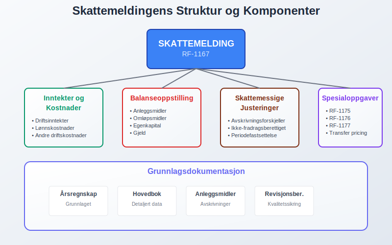
Seksjon 2: Forberedelse og Datainnsamling
2.1 Grunnlagsdokumentasjon
Skattemeldingen bygger på:
Regnskapsmateriale:
- Hovedbok med alle konti og posteringer
- Årsregnskap godkjent av styre/generalforsamling
- Revisjonsberetning (for revisjonspliktige selskap)
- Kontospesifikasjoner for alle vesentlige poster
Tilleggsdokumentasjon:
- Anleggsmiddelregister med avskrivninger
- Varelagerverdier og verdsettelsesmetoder
- Kundefordringer med tapsavsetninger
- Internasjonale transaksjoner og transfer pricing-dokumentasjon
2.2 Skattemessige vs. Regnskapsmessige Prinsipper
Viktige forskjeller:
| Område | Regnskapsmessig | Skattemessig | Konsekvens |
|---|---|---|---|
| Avskrivning | Lineære satser | Saldoavskrivning | Utsatt skatt |
| Tapsavsetninger | Forventet tap | Konstatert tap | Midlertidig forskjell |
| Pensjonskostnader | Aktuarberegnet | Faktisk innbetalt | Periodiseringsforskjell |
| Garantiavsetninger | Estimert forpliktelse | Ikke fradragsberettiget | Permanent forskjell |

2.3 Spesielle Poster og Justeringer
Ikke-fradragsberettigede kostnader:
- Representasjon utover lovlige rammer (30.000 kr)
- Bøter og overtredelsesgebyr til offentlige myndigheter
- Gaver utover fradragsgrenser
- Privatforbruk av firmabiler og telefoner
Særlige inntektsposter:
- Gevinst og tap på finansielle instrumenter
- Tilbakeført kostnadsavsetninger
- Valutagevinster/-tap på fordringer og gjeld
Seksjon 3: Selskapsberegningen
3.1 Beregning av Skattepliktig Inntekt
Trinn-for-trinn prosess:
Steg 1: Utgangspunkt
Regnskapsmessig resultat før skatt
Steg 2: Permanente justeringer
+ Ikke-fradragsberettigede kostnader
+ Mottatte skattefrie utbytter (fratrekkes)
+ Andre permanente poster
Steg 3: Midlertidige forskjeller
+ Forskjell avskrivninger (skattemessig > regnskapsmessig)
+ Forskjell tapsavsetninger
+ Andre periodiseringsforskjeller
Steg 4: Fremførbart underskudd
- Anvendelse av tidligere års underskudd
Steg 5: Skattepliktig inntekt
= Grunnlag for selskapsskatt (22%)

3.2 Praktisk Beregningseksempel
Eksempel: AS Regnskap Norge
| Post | Beløp (NOK) | Justering |
|---|---|---|
| Regnskapsmessig resultat før skatt | 2.000.000 | Utgangspunkt |
| + Ikke-fradragsberettiget representasjon | 15.000 | Permanent tillegg |
| + Bøter og overtredelsesgebyr | 25.000 | Permanent tillegg |
| - Mottatt skattefritt utbytte | (500.000) | Fritaksmetoden |
| - Skjermingsfradrag ved utbytte | Varierer | Aksjonærmodellen |
| + Forskjell avskrivninger | 80.000 | Midlertidig forskjell |
| - Fremførbart underskudd fra 2022 | (300.000) | Tidligere års tap |
| = Skattepliktig inntekt | 1.320.000 | |
| × Skattesats (22%) | 290.400 | Betalbar skatt |
3.3 Forskuddsskatt og Sluttoppgjør
Skattebetalinger gjennom året:
Forskuddsskatt:
- To terminer: 15. februar og 15. mai
- Grunnlag: Forventet skattepliktig inntekt
- Justering: Kan endres ved vesentlige avvik
- Forskuddstrekk ansatte: Administreres via skattetrekkskonto
Sluttoppgjør:
- Beregning: Endelig skatt minus forskuddsskatt
- Restskatt: Betales ved positiv differanse
- Tilgodehavende: Utbetales ved negativ differanse
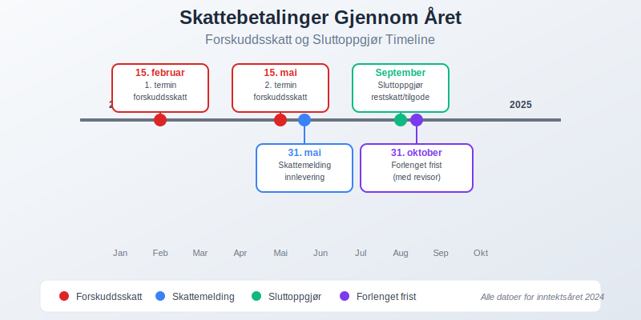
Seksjon 4: RF-skjemaer og Tilleggsinformasjon
4.1 Standard RF-skjemaer
Obligatoriske vedlegg:
| RF-skjema | Innhold | Når påkrevd |
|---|---|---|
| RF-1167 | Selskapsoppgave | Alle aksjeselskap |
| RF-1175 | Spesifikasjon anleggsmidler | Ved avskrivbare eiendeler |
| RF-1176 | Finansielle eiendeler | Betydelige finansinvesteringer |
| RF-1177 | Kundefordringer og annen gjeld | Alle selskap |
4.2 Internasjonale Skjemaer
For selskap med utenlandsvirksomhet:
RF-1086 (Aksjeoppgave):
- Aksjeoppgave for alle norske aksjeselskaper
- Rapporterer: Alle aksjonærer og hendelser i selskapet
- Brukes til: Forhåndsutfylling av aksjonærenes skattemelding
RF-1088 (Transfer Pricing):
- Dokumentasjon av internprising
- Påkrevd: Når transaksjoner > 10 mill. kr
- Benchmarking mot armlengdeprinsippet
4.3 Spesialområder
Komplekse transaksjoner krever tilleggsdokumentasjon:
Fusjoner og oppkjøp:
- Skattefri omorganisering og kontinuitetsvilkår
- Goodwill og immaterielle eiendeler
- Gevinst og tap ved eiendelssalg
Finansielle instrumenter:
- Derivater og sikringsbokføring
- Verdipapirbeholdning og realisasjonsprinsippet
- Valutakurseffekter på utenlandsk gjeld
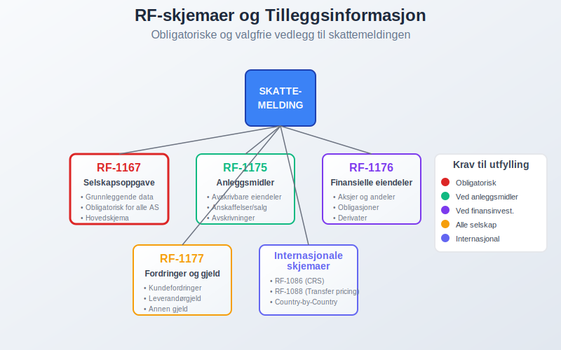
Seksjon 5: Frister og Leveringsprosess
5.1 Viktige Frister
Skattemeldingsfrister for selskap:
| Oppgave | Ordinær frist | Forlenget frist | Konsekvens ved forsinkelse |
|---|---|---|---|
| Skattemelding | 31. mai | 31. oktober (med revisor) | Forsinkelsesgebyr fra 200 kr |
| Årsregnskap | 30. juni | Ikke mulig | Tvangsmulkt |
| Revisjonsberetning | 30. juni | Ikke mulig | Aksjeloven brudd |
| CRS-rapportering | 30. juni | Ikke mulig | Overtredelsesgebyr |
5.2 Digital Innlevering
Altinn-portalen er obligatorisk leveringskanal:
Tekniske krav:
- Autentisering med BankID eller Commfides
- Digital signering av skattemeldingen
- Vedlegg i godkjente formater (PDF, Excel)
- Kvittering for mottatt innsending
Valideringsregler:
- Konsistenssjekk mellom skjemaer
- Beløpsvalidering og summer
- Obligatoriske felt må fylles ut
- Logikkontroll av sammenhenger

5.3 Kvalitetssikring før Innlevering
Intern kontroll-rutiner:
Sjekkliste for gjennomgang:
- Årsregnskap stemmer med skattemelding
- Alle RF-skjemaer er utfylt
- Skattemessige justeringer er dokumentert
- Transfer pricing er korrekt rapportert
- Utsatt skatt er beregnet riktig
- Beregninger er kontrollert mot tidligere år
Ekstern kvalitetssikring:
- Revisor-gjennomgang av skatteposisjoner
- Skatterådgiver for komplekse forhold
- Benchmarking mot sammenlignbare selskap
Seksjon 6: Skatteposisjonering og Usikre Poster
6.1 Identifisering av Skatteposisjoner
Usikre skatteposisjoner oppstår ved:
Tolkningstvil:
- Nye regnskapsregler uten etablert praksis
- Komplekse transaksjoner med uklare skattemessige konsekvenser
- Grensetilfeller mellom fradragsberettiget og ikke-fradragsberettiget
Risiko-kategorisering:
| Risiko | Sannsynlighet | Regnskapsmessig behandling |
|---|---|---|
| Høy | >50% tap ved kontroll | Avsetning for tilleggsskatt |
| Middels | 20-50% tap | Opplysningsplikt i noter |
| Lav | <20% tap | Ingen regnskapsmessig effekt |
6.2 Dokumentasjon av Posisjoner
Krav til dokumentasjon:
Juridisk analyse:
- Lovtekst og forarbeider
- Rettspraksis fra domstolene
- Forvaltningspraksis og bindende forhåndsuttalelser
- Professionale uttalelser fra skatterådgivere
Faktisk dokumentasjon:
- Kontraktsgrunnlag for transaksjoner
- Forretningsmessig begrunnelse for disposisjoner
- Beslutningsprotokoll fra styre og ledelse
- Valuarrapporter for verdsettelse
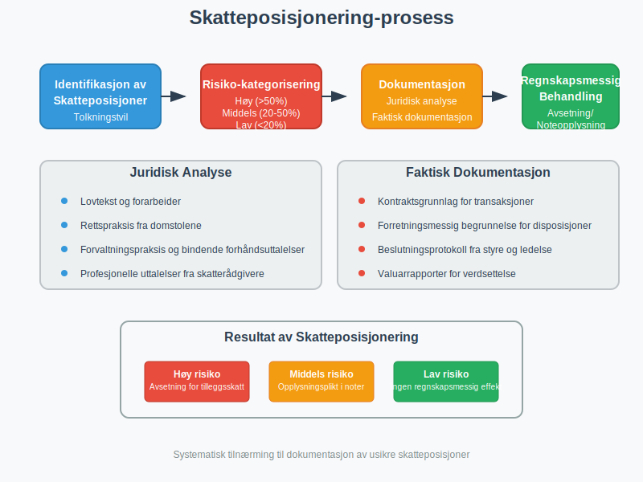
6.3 Endringer og Korrigeringer
Rettelse av skattemelding:
Rettelsesfrist:
- Innen 3 år fra innleveringsfristen
- Automatisk rettelse for enkle feil
- Manuell behandling for komplekse endringer
Tilleggsskatt:
- 20% ved uaktsom overtredelse
- 60% ved forsettlig skatteunndragelse
- Forholdsmessighetsregelen kan gi reduksjon
Seksjon 7: Spesielle Selskapstyper
7.1 Morselskap og Konsern
Konsernforhold påvirker skattemeldingen:
Fritaksmetoden:
- Skattefritt utbytte fra datterselskap
- Skattefri gevinst ved salg av aksjer
- Betingelser: Minimum 90% eierskap
Konsernbidrag:
- Fradrag for giver-selskap
- Inntekt for mottaker-selskap
- Samme konsern og regnskapsår
7.2 Eiendomsselskap
Spesielle regler for eiendom:
RISK-beskatning:
- 20% særskatt på andeler i RISK-selskap
- Unntak: Profesjonelle eiendomsutviklere
- Dokumentasjon: Betydelig utviklingsvirksomhet
Dokumentavgift:
- 2,5% på eiendomsoverdragelser
- Unntak: Konserninternte transaksjoner
- Periodisering: Påvirker ikke skattemeldingen
7.3 Finansielle Selskap
Banker og forsikring:
Spesielle fradrag:
- Tapsavsetninger på utlån
- Aktuarmessige avsetninger for forsikring
- Sikringsbokføring av finansielle instrumenter
Soliditetskapital:
- Egenkapital-krav påvirker utbyttepolitikk
- Basel-regler og kapitaldekningsgrad
- Oppkapitalisering vs. utbytteutdeling
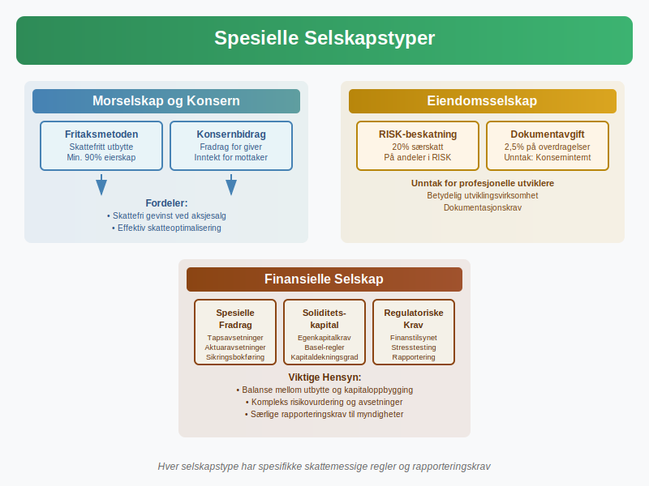
Seksjon 8: Internasjonale Aspekter
8.1 Utenlandske Dattersekskap
Rapportering av utenlandsvirksomhet:
CFC-regler (Controlled Foreign Company):
- Lavskatteland: Effektiv skatt under 19%
- Passiv inntekt: Renter, utbytte, royalty
- Gjennomskatning: Norsk skatt på ufordelt overskudd
Transfer pricing dokumentasjon:
- Masterfil: Konsernstruktur og forretningsmodell
- Lokalfil: Detaljert informasjon per enhet
- Country-by-Country: Konsoliderte finansielle data
8.2 Grenseoverskridende Transaksjoner
Komplekse internasjonale forhold:
Permanent etablering:
- Skattemessig etablering i utlandet
- Fordelingsnøkler for inntekt og kostnader
- Skatteavtaler og allokeringsregler
Valutakurseffekter:
- Funksjonell valuta vs. rapporteringsvaluta
- Sikring av valutaeksponering
- Realisasjonsprinsippet for kursgevinster
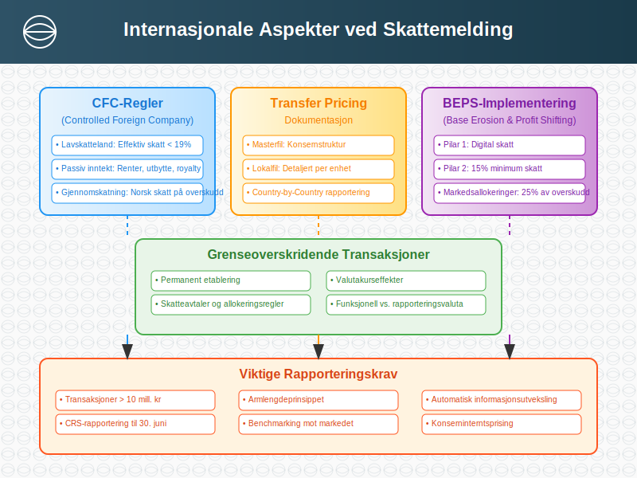
8.3 BEPS-implementering
Base Erosion and Profit Shifting:
Pilar 1 (Digital skatt):
- Minimum omsetning: USD 20 milliarder
- Profitabilitet: Over 10% margin
- Markedsallokeringer: 25% av overskudd
Pilar 2 (Minimum skatt):
- 15% minimum skattesats globalt
- Substance-based carve-out for reell aktivitet
- Safe harbor-regler for lavrisiko-jurisdiksjoner
Seksjon 9: Digitale Verktøy og Systemer
9.1 ERP-integrasjon
Automatisering av skattemeldingsprosessen:
Systemintegrasjon:
- API-kobling mellom regnskap og Altinn
- Datamapping fra kontoplan til RF-skjemaer
- Automatisk validering før innlevering
Arbeidsflyt-styring:
- Godkjenningsrutiner for skatteposisjoner
- Versjonskontroll av skattemelding
- Auditspor for alle endringer
9.2 AI og Maskinlæring
Fremtidens skattemelding:
Prediktiv analyse:
- Automatisk identifikasjon av skatteposisjoner
- Benchmarking mot sammenlignbare selskap
- Risikoanalyse for kontrollsannsynlighet
Natural Language Processing:
- Automatisk ekspert av data fra kontrakter
- Klassifisering av transaksjoner
- Sammendrag av komplekse juridiske tekster
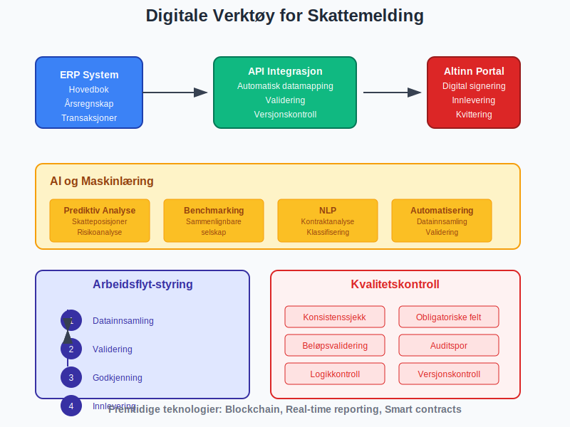
9.3 Blockchain og Immutable Records
Fremtidige muligheter:
Transparent regnskapsføring:
- Uendrelig transaksjonshistorikk
- Real-time deling med skattemyndigheter
- Smart contracts for automatisk compliance
Kryptovaluta og DeFi:
- Automatisk sporing av kryptotransaksjoner
- DeFi-protokoller og yield farming
- NFT og digitale eiendeler
Seksjon 10: Kvalitetssikring og Risikostyring
10.1 Intern Kvalitetskontroll
Fire-øyne-prinsippet:
Organisering av kontroll:
| Rolle | Ansvar | Kontrollnivå |
|---|---|---|
| Regnskapsfører | Utarbeiding og førstegangskontroll | Operasjonell |
| Økonomisjef | Faglig gjennomgang og godkjenning | Taktisk |
| Daglig leder | Overordnet ansvar og signering | Strategisk |
| Revisor | Uavhengig kvalitetssikring | Ekstern |
Kontrollaktiviteter:
- Analytical review av nøkkeltall
- Substansgjennomgang av størte poster
- Trend-analyse mot tidligere år
- Benchmarking mot bransjesnittet
10.2 Risikoidentifikasjon
Systematisk risikokartlegging:
Operasjonelle riskier:
- Fristoverskridelse og forsinkelsesgebyr
- Regnskapsføringsfeil og korrigeringer
- Manglende dokumentasjon for posisjoner
Regulatoriske riskier:
- Lovendringer og overgangsregler
- Tolkingsusikkerhet for nye transaksjoner
- Compliance-gap i komplekse områder
Omdømmeriskier:
- Mediefokus på skatteplanlegging
- Stakeholder-forventninger til transparens
- ESG-vurderinger av skattestrategi
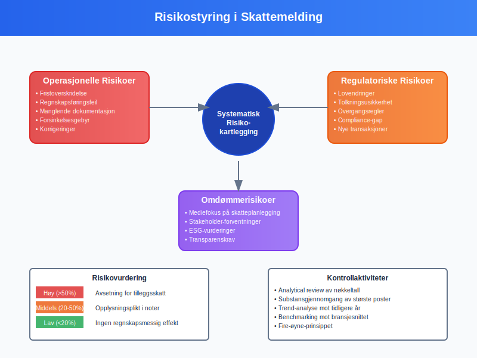
10.3 Kontinuerlig Forbedring
Læring og utvikling:
Post-prosess evaluering:
- Debrief etter hver innleveringsrunde
- Identifikasjon av forbedringspunkter
- Benchmarking mot beste praksis
Kompetanseutvikling:
- Faglig oppdatering på skatteregler
- Systemopplæring for nye verktøy
- Tverrfaglig kompetanse på regnskap og skatt
Seksjon 11: Kontroll og Etterfølgende Prosesser
11.1 Skattemyndighetenes Kontrollaktivitet
Hvordan Skatteetaten følger opp:
Risikoseleksjon:
- Automatiserte algoritmer for avviksdeteksjon
- Bransjeprogrammer for spesifikke sektorer
- Tilfeldig utvalg for generell overvåking
Kontrollformer:
| Kontrolltype | Omfang | Varighet | Ressursbehov |
|---|---|---|---|
| Skrivebordskontroll | Dokumentgranskning | 1-3 måneder | Middels |
| Bokkontroll | Besøk hos skattyter | 3-12 måneder | Høy |
| Bransjekontroll | Sektor-fokusert | 6-24 måneder | Meget høy |
11.2 Forberedelse til Skattecontrol
Proaktiv tilnærming:
Dokumentorganisering:
- Digital arkivering med strukturerte filnavn
- Cross-referencing mellom regnskap og skattemelding
- Tilgjengelihetsplan for kontroll-situasjoner
Responsgruppe:
- Juridisk rådgiver for tolkningsspørsmål
- Skatteregnskapsførerfører for detaljgjennomgang
- Daglig leder for strategiske beslutninger
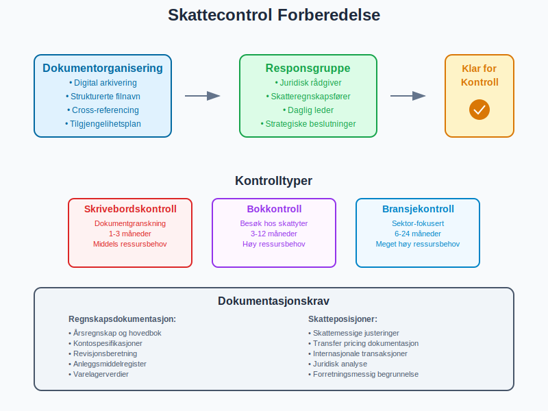
11.3 Klager og Rettsmidler
Når man er uenig med skattemyndighetene:
Klageadgang:
- Klagefrist: 3 uker fra varsel
- Klagemyndighet: Skatteklagenemda
- Videre klage: Tingretten for rettslige spørsmål
Klagestrategi:
- Juridisk grunnlag: Lovtekst og rettspraksis
- Faktisk grunnlag: Dokumentasjon og bevis
- Prosedyre: Formelle krav til klage
Seksjon 12: Skattemelding for Ulike Bransjer
12.1 Teknologi og Software
IT-selskapers særegenheter:
Immaterielle eiendeler:
- Programvare-utvikling: Aktivering vs. kostnadføring
- Cloud-tjenester: Geografisk allokering
- Patenter og IP: Transfer pricing og verdsettelse
Internationale forhold:
- Digital skatt under OECD Pilar 1
- VAT på elektroniske tjenester
- Substance-krav for IP-selskap
12.2 Eiendom og Utvikling
Eiendomsbransjens kompleksitet:
Prosjektavregning:
- Ferdigstillelsesgrad for prosjekter
- Work-in-progress verdsettelse
- Salg før ferdigstillelse og periodisering
MVA-forhold:
- Nybygg: 25% MVA ved salg
- Rehabilitering: Fradragsrett for MVA
- Utleie: MVA-fritak for boliger
12.3 Olje og Gass
Petroleumssektorens særordninger:
Petroleumsskatten:
- 78% kombinert skatt (22% + 56%)
- Friløsning: Kostnader før produksjon
- Oppløsning: Rettigheter etter endt virksomhet
Ring-fence regler:
- Adskillelse fra annen virksomhet
- Transfer pricing internt i konsern
- Uplift: 24% tillegg på investeringer
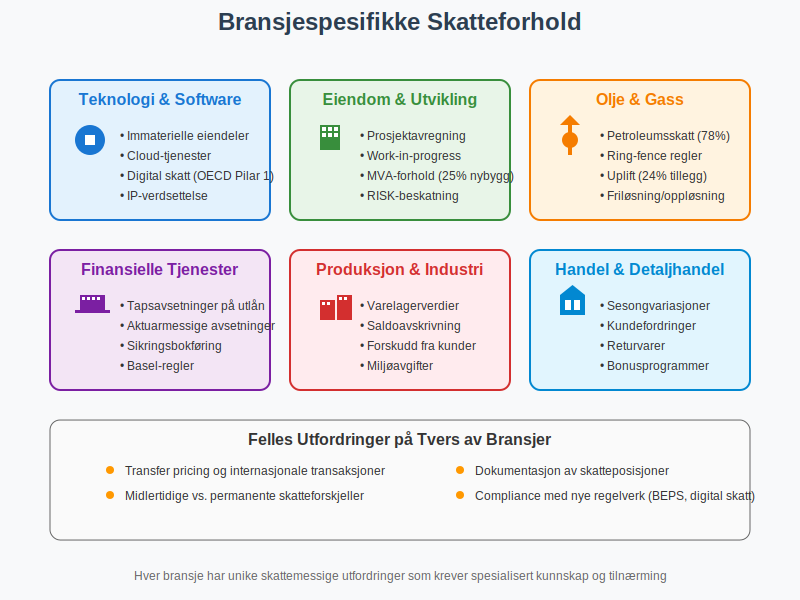
Seksjon 13: Fremtidige Utviklingstrekk
13.1 Real-time Reporting
Kontinuerlig skatteovervåking:
Teknologiske muligheter:
- API-integrasjon mellom ERP og Skatteetaten
- Real-time validering av transaksjoner
- Automatisk skatteberegning og innbetaling
Implementeringsutfordringer:
- Systemkostnader for oppgradering
- Privatsførsyn og datasikkerhet
- Internasjonalt samarbeid og standarder
13.2 Kunstig Intelligens i Skatteregning
AI-drevet skatteoptimalisering:
Prediktive modeller:
- Scenario-analyse for skatteposisjoner
- Optimization av timing for transaksjoner
- Risk assessment for kontrolltøl-sannsynlighet
Automatisering:
- Natural language processing av kontrakter
- Automated entry av transaksjoner
- Intelligent kategorisering av kostnader
13.3 Bærekraft og ESG
Grønn skattepolitikk:
Miljøincentiver:
- CO₂-avgifter og klimakvoter
- Grønne fradrag for bærekraftige investeringer
- Sirkulærøkonomи og avfallsreduksjon
Transparenskrav:
- Country-by-country public reporting
- Tax strategy publikasjon
- Stakeholder engasjement på skatteområdet
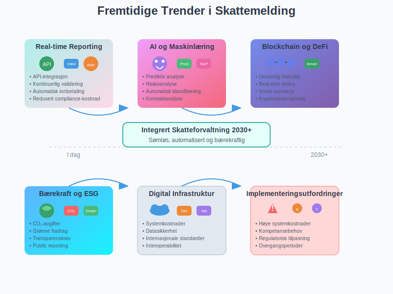
Seksjon 14: Praktiske Verktøy og Ressurser
14.1 Sjekklister og Maler
Strukturert tilnærming:
Forberedelsesssjekkliste:
- Årsregnskap godkjent og signert
- Alle RF-skjemaer identifisert
- Skattemessige justeringer beregnet
- Transfer pricing dokumentasjon klar
- Kvalitetskontroll gjennomført
- Digital innlevering forberedt
Etterbehandlings-sjekkliste:
- Kvittering for mottatt skattemelding arkivert
- Forskuddsskatt for neste år vurdert
- Baksmell vurdert ved likningsoppgjør
- Utsand skatt beregning oppdateret
- Dokumentasjon arkivert for fremtidige kontroller
14.2 Kalkulatorer og Beregningsverktøy
Digitale hjelpemidler:
| Verktøy | Formål | Brukergruppe |
|---|---|---|
| Skattekalkulator | Estimering av skatteeffekt | SME, regnskapsførere |
| Utsatt skatt kalkulator | Beregning av midlertidige forskjeller | Regnskapsførere, revisorer |
| Transfer pricing benchmark | Armlengde-testing | MNE, skatterådgivere |
| CFC-kalkulator | Controlled Foreign Company beregning | Konsern med utenlandsvirksomhet |
14.3 Kompetanseutvikling
Kontinuerlig læring:
Formelle kurser:
- Skatterett grunnleggende og avansert
- International skattplanlegging
- Digital skatteforvaltning og teknologi
Bransjearrangementer:
- Konferanser og seminarer
- Webinairer med skatteeksperter
- Professional networks og diskusjonsfora
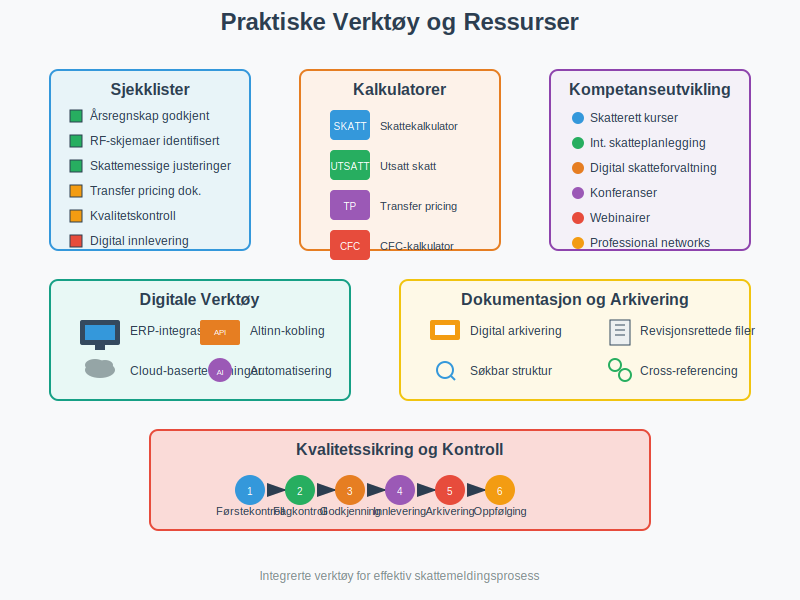
Konklusjon
Skattemeldingen er en kritisk komponent i bedrifters regnskapsføring og finansielle rapportering som krever både teknisk presisjon og strategisk forståelse. Fra grunnleggende datainnsamling til komplekse internasjonale forhold påvirker skattemeldingsprosessen alle aspekter av regnskapsføringen og den strategiske planleggingen.
Nøkkelinnsikter:
- Kvalitet over hastighet: Grundig forberedelse reduserer risiko for senere korrigeringer
- Dokumentasjon er avgjørende: Solid dokumentasjon beskytter mot kontrollers og tvister
- Teknologi muliggjør effektivisering: Automatisering frigjør ressurser til verdiskapende aktiviteter
- Internasjonale trender: BEPS, digital skatt og real-time reporting former fremtidens skattemelding
Praktisk anvendelse:
For regnskapsførere, økonomi-ansvarlige og bedriftsledere er korrekt skattemeldingsbehandling essensielt for:
- Regelverksetterlevelse og risikomynimering
- Effektiv kontantstrømstyring gennem nøyaktig skatteplanlegging
- Tillit hos stakeholders og myndigheter
- Strategisk beslutningsoptimalisering basert på skattemessige konsekvenser
- Håndtering av restskatt: Se Restskatt for råd om beregning, bokføring og forebygging av restskatt
Fremtidsperspektiv:
Skattemeldingsprosessen gjennomgår en fundamental transformasjon drevet av digitalisering, internasjonalt regulatory-samarbeid og økte transparenskrav. Bedrifter som investerer i moderne verktøy, bygger robust kompetanse og implementerer effektive kvalitetssikringsrutiner vil være best posisjonert for å møte fremtidens krav til skatteforvaltning og skatteregioning.
Skattemeldingen er ikke bare en compliance-oppgave - den er en strategisk mulighet for å optimalisere skatteposisjoner, redusere kostnader og bidra til bedre kapitalallokering i organisasjonen. Ved å behandle skattemeldingen som en integrert del av den finansielle styrings- og planleggingsprosessen kan bedrifter oppnå betydelige competitive fordeler i markedet.
Se også Skatteberegning for en detaljert gjennomgang av beregningsprosessen.